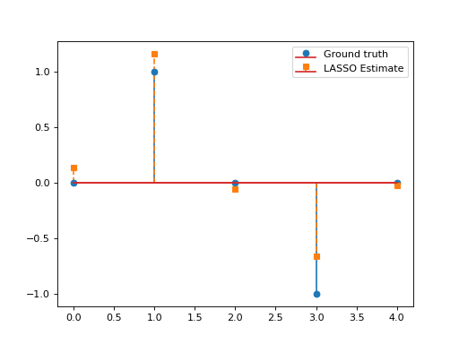

Pycsou is a Python 3 package for solving linear inverse problems with state-of-the-art proximal algorithms. The software implements in a highly modular way the main building blocks -cost functionals, penalty terms and linear operators- of generic penalised convex optimisation problems.
This Python library is inspired by the MATLAB GlobalBioIm project. The LinearOperator interface is based on scipy.sparse and Pylops.
Inverse Problems in a Nutshell¶
See also
See Background Concepts for a more in-depth discussion on the topic.
Most real-life approximation problems can be formulated as linear inverse problems:
Such problems are in general ill-posed, i.e. attempting to directly solve the linear system \(\mathbf{y}=\mathbf{G}\alpha\) may yield no solution, infinitely many solutions, or numerically unstable solutions. Therefore, linear inverse problems are commonly solved by means of a penalised optimisation problem, confronting the physical evidence to the analyst’s a priori beliefs about the solution (e.g. smoothness, sparsity) via a data-fidelity and regularisation term, respectively:
\(F:\mathbb{R}^L\times \mathbb{R}^L\rightarrow \mathbb{R}_+\cup\{+\infty\}\) is called a loss functional, measuring the discrepancy between the observed and predicted measurements \(\mathbf{y}\) and \(\mathbf{G}\mathbf{\alpha}\) respectively.
\(\mathcal{R}:\mathbb{R}^N\to \mathbb{R}_+\cup\{+\infty\}\) is a penalty functional favouring simple and well-behaved solutions (typically with a finite number of degrees of freedom).
\(\lambda>0\) is a penalty parameter which controls the amount of regularisation by putting the regularisation functional and the cost functional on a similar scale.
Warning
In this package, we assume the loss and penalty functionals to be proper, convex and lower semi-continuous.
Features¶
Pycsou makes it very easy to construct and solve penalised optimisation problems à la (1):
It offers a rich collection of linear operators, loss functionals and penalty functionals commonly used in practice. 1
It implements arithmetic operations 2 for linear operators, loss functionals and penalty functionals, hence allowing to add, substract, scale, compose, exponentiate or stack 3 those various objects with one another and hence quickly design custom complex optimisation problems.
It implements a rich collection of state-of-the-art iterative proximal algorithms, 4 including efficient primal-dual splitting methods which involve only gradient steps, proximal steps and simple linear evaluations.
It supports matrix-free linear operators, 5 making it easy to work with large scale linear operators that may not necessarily fit in memory. Matrix-free linear operators can be implemented from scratch by subclassing the asbtract class
LinearOperator, or built 6 from Scipy sparse matrices, distributed Dask arrays or Pylops matrix-free operators (which now support GPU computations).It implements automatic differentiation/proximation rules 7, allowing to automatically compute the derivative/proximal operators of functionals constructed from arithmetic operations on common functionals shipped with Pycsou.
It leverages powerful rule-of-thumbs for setting automatically the hyper-parameters of the provided proximal algorithms.
Pycsou is designed to easily interface with the packages scipy.sparse and Pylops. This allows to use the sparse linear algebra routines from
scipy.sparseon PycsouLinearOperator, and benefit from the large catalogue of linear operators and solvers fromPylops.
Usage¶
Example 1¶
Consider the following optimisation problem:
\[\min_{\mathbf{x}\in\mathbb{R}_+^N}\frac{1}{2}\left\|\mathbf{y}-\mathbf{G}\mathbf{x}\right\|_2^2\quad+\quad\lambda_1 \|\mathbf{D}\mathbf{x}\|_1\quad+\quad\lambda_2 \|\mathbf{x}\|_1,\]
with \(\mathbf{D}\in\mathbb{R}^{N\times N}\) the discrete derivative operator and \(\mathbf{G}\in\mathbb{R}^{L\times N}, \, \mathbf{y}\in\mathbb{R}^L, \lambda_1,\lambda_2>0.\)
This problem can be solved via the PrimalDualSplitting algorithm with \(\mathcal{F}(\mathbf{x})= \frac{1}{2}\left\|\mathbf{y}-\mathbf{G}\mathbf{x}\right\|_2^2\), \(\mathcal{G}(\mathbf{x})=\lambda_2\|\mathbf{x}\|_1,\)
\(\mathcal{H}(\mathbf{x})=\lambda \|\mathbf{x}\|_1\) and \(\mathbf{K}=\mathbf{D}\).
import numpy as np
import matplotlib.pyplot as plt
from pycsou.linop.diff import FirstDerivative
from pycsou.func.loss import SquaredL2Loss
from pycsou.func.penalty import L1Norm, NonNegativeOrthant
from pycsou.linop.sampling import DownSampling
from pycsou.opt.proxalgs import PrimalDualSplitting
x = np.repeat([0, 2, 1, 3, 0, 2, 0], 10)
D = FirstDerivative(size=x.size, kind='forward')
D.compute_lipschitz_cst(tol=1e-3)
rng = np.random.default_rng(0)
G = DownSampling(size=x.size, downsampling_factor=3)
G.compute_lipschitz_cst()
y = G(x)
l22_loss = (1 / 2) * SquaredL2Loss(dim=G.shape[0], data=y)
F = l22_loss * G
lambda_ = 0.1
H = lambda_ * L1Norm(dim=D.shape[0])
G = 0.01 * L1Norm(dim=G.shape[1])
pds = PrimalDualSplitting(dim=G.shape[1], F=F, G=G, H=H, K=D, verbose=None)
estimate, converged, diagnostics = pds.iterate()
plt.figure()
plt.stem(x, linefmt='C0-', markerfmt='C0o')
plt.stem(estimate['primal_variable'], linefmt='C1--', markerfmt='C1s')
plt.legend(['Ground truth', 'PDS Estimate'])
plt.show()
(Source code, png, hires.png, pdf)
{kind=link}
{kind=link}

Example 2¶
Consider the LASSO problem:
\[\min_{\mathbf{x}\in\mathbb{R}^N}\frac{1}{2}\left\|\mathbf{y}-\mathbf{G}\mathbf{x}\right\|_2^2\quad+\quad\lambda \|\mathbf{x}\|_1,\]
with \(\mathbf{G}\in\mathbb{R}^{L\times N}, \, \mathbf{y}\in\mathbb{R}^L, \lambda>0.\) This problem can be solved via APGD with \(\mathcal{F}(\mathbf{x})= \frac{1}{2}\left\|\mathbf{y}-\mathbf{G}\mathbf{x}\right\|_2^2\) and \(\mathcal{G}(\mathbf{x})=\lambda \|\mathbf{x}\|_1\). We have:
\[\mathbf{\nabla}\mathcal{F}(\mathbf{x})=\mathbf{G}^T(\mathbf{G}\mathbf{x}-\mathbf{y}), \qquad \text{prox}_{\lambda\|\cdot\|_1}(\mathbf{x})=\text{soft}_\lambda(\mathbf{x}).\]
This yields the so-called Fast Iterative Soft Thresholding Algorithm (FISTA), whose convergence is guaranteed for \(d>2\) and \(0<\tau\leq \beta^{-1}=\|\mathbf{G}\|_2^{-2}\).
import numpy as np import matplotlib.pyplot as plt from pycsou.func.loss import SquaredL2Loss from pycsou.func.penalty import L1Norm from pycsou.linop.base import DenseLinearOperator from pycsou.opt.proxalgs import APGD rng = np.random.default_rng(0) G = DenseLinearOperator(rng.standard_normal(15).reshape(3,5)) G.compute_lipschitz_cst() x = np.zeros(G.shape[1]) x[1] = 1 x[-2] = -1 y = G(x) l22_loss = (1/2) * SquaredL2Loss(dim=G.shape[0], data=y) F = l22_loss * G lambda_ = 0.9 * np.max(np.abs(F.gradient(0 * x))) G = lambda_ * L1Norm(dim=G.shape[1]) apgd = APGD(dim=G.shape[1], F=F, G=None, acceleration='CD', verbose=None) estimate, converged, diagnostics = apgd.iterate() plt.figure() plt.stem(x, linefmt='C0-', markerfmt='C0o') plt.stem(estimate['iterand'], linefmt='C1--', markerfmt='C1s') plt.legend(['Ground truth', 'LASSO Estimate']) plt.show()(Source code, png, hires.png, pdf)

{kind=link}
{kind=link}
Cite¶
For citing this package, please see:
Footnotes
- 1
See Linear Operators, Loss Functionals and Penalty Functionals respectively.
- 2
See for example the arithmetic methods from the abstract classes
Map,DifferentiableMap,LinearOperator,Functional,DifferentiableFunctionalandProximableFunctional.- 3
See
MapStack,DiffMapStack,LinOpStack, orProxFuncHStack.- 4
See Proximal Algorithms.
- 5
See
LinearOperator.- 6
See
SparseLinearOperator,DaskLinearOperatorandPyLopLinearOperator.- 7
See
DifferentiableMapandProximableFunctionalfor more on the topic.